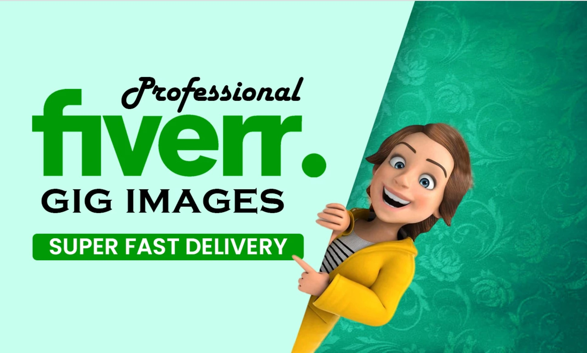
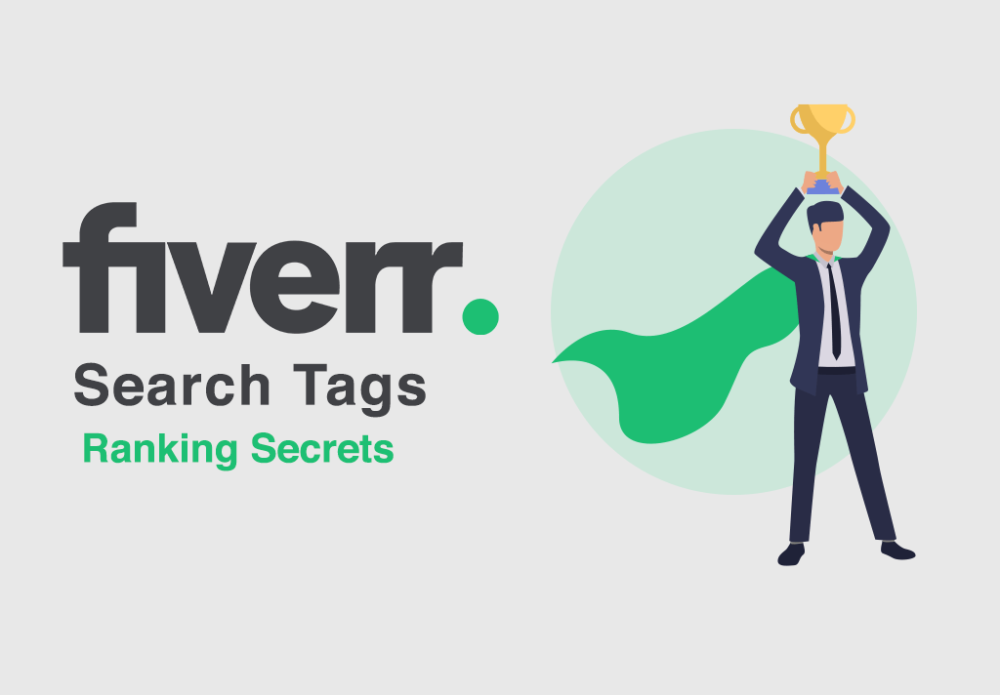

By Fiverr Team september 9,2020

Our new brand campaign, “It Starts Here”, was inspired by our mission to change how the world works and the need for digital transformation that’s been accelerated by the pandemic
Since mid-March, COVID-19 has affected virtually every aspect of life and changed the world as we know it. Small businesses were impacted immediately and forced to quickly find ways to stay afloat. At Fiverr, we wanted to make it clear to our community that we won’t just help you survive—we’ll empower you to thrive.
“It Starts Here” centers around three real brands using Fiverr to transform their businesses: hydroponic farm Greener Roots, antique furniture store Patina & Co., and pizzeria Slim & Husky’s—which doubles as a community center. These brands vary in purpose, size, and developmental stage, but share the common thread of Fiverr. Each worked closely with Fiverr sellers around the globe, hiring freelancers from our community to do everything from website creation, product photography, software development, and more.
This campaign provides a real, authentic glimpse into the changes these businesses had to make due to the pandemic—and the challenges they’ve overcome in adapting to the digital world—in order to allow viewers to build deeper connections with each brand and watch them thrive.

Due to COVID-19 forcing most people to stay inside, we reassessed our campaign marketing strategy. Our traditional tactic of OOH ads were swapped for digital and national TV ads that would reach buyers and sellers where they are.
“It Starts Here” features a variety of short-form video ad spots which will run across digital streaming channels, as well as social media and national US TV. You can watch each video here.
For our social channels, including YouTube and Instagram, viewers will get a more in-depth look at each business. Check out the longer-form videos below.
In tandem with our new campaign, we’re launching our new branding. To honor the 10-year evolution of Fiverr from a startup to a multi-billion dollar business operating in 160 countries, we’re celebrating our community. Our brand materials will showcase photos of real buyers and sellers—not stock imagery—working in their remote work environment. Take a peek at images featuring members of the Fiverr community hard at work.
The new Fiverr visual identity will mimic the creativity, energy and determination of the Fiverr community through a bold look and feel: a broadened color palette, a two-typeface typographic system, and a bespoke work marquee